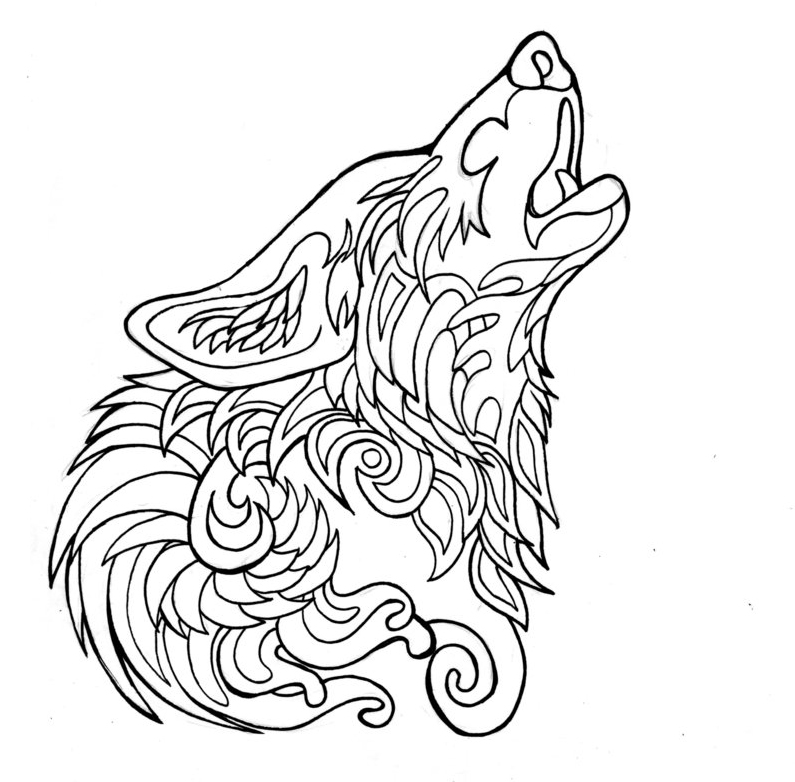

Nouvelle écrite pour le concours de nouvelles de Châtel
Thème : commencer avec les phrases "On la croyait perdue. Pourtant, de colline en colline, de village en village, de barde à barde, la longue prophétie s’est transmise, secrètement répandue comme les gouttes de l’huile à la surface de l’eau."
Classement : quatrième
Novembre 2016
On la croyait perdue. Pourtant, de colline en colline, de village en village, de barde à barde, la longue prophétie s’est transmise, secrètement répandue comme les gouttes de l’huile à la surface de l’eau. Des pêcheurs du grand Ouest aux guerriers aguerris, tous propageaient la nouvelle avec excitation. On racontait que Noreen, fille du vieux chef des Lavis, trouverait l’amour très bientôt. Les Dieux étaient formels. « Villages de tous horizons, rassemblez vos meilleurs hommes, avait annoncé le doyen de ces terres. » La prophétie prévoyait une épreuve mystérieuse, que les prétendants devraient surmonter. La suite était prédictible ; le premier qui réussirait obtiendrait la main de Noreen, et avec cette dernière, la gouvernance du plus grand village celte. Mais les divinités n’avaient pas encore dévoilé le contenu du défi qu’il faudrait affronter. Cela ne saurait tarder, avait révélé le nouveau prêtre de la tribu Lavi.
Noreen passa une main dans ses longs cheveux blonds en observant son reflet dans le lac bleuté. Du haut de ses trente-six ans, elle aurait dû être mariée depuis bien longtemps. Mais, contre l’avis de son père, elle avait toujours refusé de voir des dizaines de prétendants affluer pour la rencontrer. Leur but était clair : la séduire pour obtenir le royaume. Quelle hypocrisie ! On la croyait donc perdue, sans descendance pour assurer l’administration de cette grande tribu.
Mais les Dieux en avaient décidé autrement. Pour le pire ou pour le meilleur, soupira Noreen, ne sachant quoi penser de cette récente prophétie.
Cillian attrapa son masque de bois. Les oreilles pointues et la finesse des traits rappelaient fortement ceux d’un loup. Et le jeune garçon aimait cela. Se cacher derrière l’animal nocturne. L’annonce de la prophétie le mois dernier avait marché bien mieux qu’il l’avait prédit. Le poids de la nouvelle commençait petit à petit à peser sur ses épaules. « Parler avec les Dieux » n’était pas chose anodine. Ses doigts tremblèrent quelque peu en enfilant son costume divin. Il était pourtant sûr de lui, certain de ce qu’il devait faire à cet instant. On pouvait presque voir les sourcils de l’homme se froncer à travers le masque de loup. Une détermination bestiale.
L’animal sortit enfin de sa loge pour paraître devant le public en admiration. La foule réclamait l’annonce providentielle. Il croisa les bras, attendant un retour au calme avant de commencer à parler. Ses yeux se plissèrent et un sourire indétectable se dessina sur son visage camouflé. Cillian, porte-parole des Dieux, allait nourrir le peuple, affamé. Donnez-leur de l’aventure, des promesses de nouveauté, de changement. Ces nouvelles, comme imprimées sur du papier glacé, leur permettraient d’oublier leurs problèmes. Si Cillian n’était pas le héros qui épouserait la belle, il n’en était pas moins puissant.
« Peuple Lavi, et voyageurs du monde entier, me voilà devant vous pour vous apporter une nouvelle des plus importantes. »
Il fit une pause ; l’homme au masque savait manier l’art de la rhétorique. La tension montait dans la salle.
« Les Dieux se sont de nouveau exprimé. Ils m’ont révélé la nuit dernière le contenu de l’épreuve à passer pour obtenir le cœur de la belle Noreen… »
Tous retinrent leur respiration. Cillian sourit enfin pleinement derrière son masque ; il n’était pas mécontent du résultat.
« Sans force, sans arme ni couteau, le héros sortira cette sphère de bois de sa prison ! »
Il brandit l’objet mystique dans les airs, et les spectateurs d’applaudir. Il le présenta sous tous les angles possibles : une boule parfaite était enfermée dans un cube creux, en bois lui aussi et à peine plus grand qu’elle. Des trous étaient creusés sous tous les côtés du parallélépipède, mais restaient bien trop petits pour laisser passer la fameuse sphère. Il n’y avait alors aucun doute possible, ils avaient été sculptés dans le même arbre. Et les Dieux seraient intransigeants ; les objets ne devaient être brisés. Il fallait séparer ces jumeaux nés pour les retrouver intacts, sans la moindre égratignure.
L’épreuve était tout simplement impossible.
Cillian ferma les yeux pour savourer ce moment. Ce naïf égarement d’un peuple entier.
Puis il disparut dans un nuage de fumée.
Le chef Lavi le chercha du regard, apeuré. Non, non, non, il ne pouvait pas partir comme ça… Un affolement incontrôlable s’emparait de lui. Le vieil homme arpenta les couloirs, à la recherche du prêtre volatilisé. Ses douloureuses articulations le ralentissaient et il trébuchait de temps en temps.
Le loup apparut soudainement derrière une porte, fixant le patriarche à travers son masque.
« - Vous me cherchiez ? demanda Cillian innocemment. - Oui, bredouilla doucement son interlocuteur. Je… Je souhaitais voir l’objet. »
Le loup lui tendit le cube mystique. Le chef s’en empara immédiatement et l’observa attentivement. Plus le temps passait, plus ses mains tremblaient et les traits de son visage se durcissaient. Il releva la tête après trois minutes de recherche intensive, laissant apparaître un visage terrifié.
« - Mais c’est impossible, parvint-il à prononcer. - Les Dieux savent. Ils connaissent le chemin. Pour nous tous, et ils trouveront celui de Noreen. »
Cillian tenta de rassurer le vieux père, en le raccompagnant doucement jusqu’à sa demeure. Il était bien sûr inquiet pour sa tendre fille, qu’il n’était jamais parvenu à marier. Il craignait pour l’avenir, pauvre homme.
Sur le chemin du retour, le jeune prêtre fut surpris par celui qu’il ne connaissait que trop bien. Roy le salua d’une tape amicale sur l’épaule. Cillian connaissait exactement la raison de sa venue. Le semblant de regard surpris de son ami ne le tromperait pas. Ce dernier lança une discussion banale, portant sur la chaleur exceptionnelle de cette journée d’été.
« Je t’arrête tout de suite Roy. Tu veux voir le cube, c’est ça ? »
Nouvelle fausse mine surprise. Il finit par afficher une moue approbatrice et le loup lui tendit donc l’objet. Il l’examina avec soin, comme l’avait fait le patriarche avant lui.
« - Tu as mon argent ? demanda l’homme-animal.
- Non, plus tard. »
Cillian s’y attendait. Leur pacte était noué, mais Roy voulait tout d’abord être certain de son succès. Il lui rendit l’objet mystique d’un geste désinvolte. Il était satisfait.
« Je serai là le sixième jour, annonça-t-il avant de s’éloigner. »
La journée qui suivit l’annonce fut aussi désastreuse que le vieux chef l’avait crainte. Les prétendants s’enchaînèrent pour tenter de séparer les deux formes de bois, sans qu’aucun d’eux n’y parvienne. Chaque homme qui s’approchait du prêtre au masque de loup devenait un nouvel espoir pour le père de Noreen ; et chaque fois sa déception devenait plus amère que la précédente. La jeune fille observait la situation d’un œil distrait, comme si elle n’était simplement pas concernée. Pour dire vrai, elle était absolument certaine que cette situation lui déplaisait fortement. Mais on ne peut rien contre la parole divine.
Les journées se succédèrent sans davantage de résultat. Les prétendants se raréfiaient devant la difficulté de l’épreuve et les échecs successifs.
Au quatrième lever de soleil qui suivait l’annonce des Dieux, un jeune ouvrier s’approcha du prêtre au masque de loup. Il était vêtu simplement, d’une blouse usée qui dévoilait la pauvreté de cet homme. Après les nombreux nobles et savants qui avaient tenté de résoudre l’énigme divine, la présence de ce petit maçon fit rire les quelques immuables spectateurs. Parmi eux, Roy, dont le sourire moqueur n’avait pas quitté le visage depuis le début des festivités.
L’inconnu plaça devant lui un large sceau d’eau.
« Suis-je autorisé à l’utiliser pendant l’épreuve ? »
Cillian hocha la tête en signe d’approbation.
Le prétendant ne se fit pas prier. Il saisit l’objet et le plaça dans son sceau. Il s’assit en tailleur en face du prêtre et attendit. Ce dernier, quelque peu troublé par l’attitude du jeune homme, lui demanda si tout allait bien. Il acquiesça.
Une heure passa, et les nombreux passants commençaient à se poser des questions. A quoi jouait cet ouvrier ? Se moquait-il des Dieux ? A priori, il ne commettait aucune faute grave et on le laissa faire comme il le souhaitait jusqu’au lendemain matin.
Au cinquième lever de soleil, il n’avait pas bougé. Quelques hommes vinrent clamer leur droit d’essayer à leur tour. Il ne devait pas être le seul à pouvoir tenter l’épreuve. Eux aussi étaient en droit de demander leur chance d’épouser Noreen. Néanmoins, l’homme, imperturbable, demanda un jour de sursis. Après une mince hésitation, Cillian accepta. Attendre jusqu’à l’arrivée de Roy avec ce bon à rien ne ferait qu’augmenter ses chances de réussite.
Le sixième jour arriva enfin, et avec lui l’ami nocturne du prêtre. Roy s’avança devant le pauvre homme, qui était maintenant assis depuis deux jours entiers.
« Je crois que ton heure a sonné, prononça-t-il malicieusement. »
L’ouvrier hocha la tête, et retira soigneusement le cube de l’eau. Il plaça ses mains délicatement autour de la sphère, et la plaqua doucement contre l’un des trous. Petit à petit, il força sur les parois pour faire glisser la boule enfermée vers l’extérieur. Sous les yeux ébahis d’une tribu entière, le bois humide se déforma pour laisser échapper la forme interne.
L’homme put enfin brandir en l’air ce trophée inestimable. La sphère de bois sortie de sa cage.
Noreen s’agenouilla immédiatement devant cet homme, aux vêtements si pauvres et au regard si simple.
Roy poussa un cri en jetant ce qui lui aurait permis d’être le grand héros des Lavis. Un cube et une sphère, de la même taille que les objets « divins », déjà séparés. Dans la manche du joueur de cartes se cachait un deuxième as. Mais un autre était arrivé avant lui.
Cillian prononça quelques phrases banales pour féliciter l’heureux élu, puis s’enfuit rapidement. Devant l’échec cuisant de leur coopération, il n’obtiendrait jamais l’argent de Roy, son partenaire déchu. Et il était encore temps de se volatiliser, avant que le peuple découvre les mensonges d’un loup masqué.